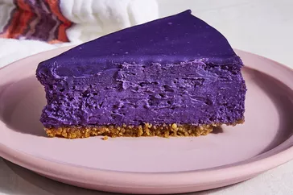

sweet and crumchy
all cake ingridients
parceling papers and ribbons
graham cracker crumbs,granuiated sugar,flavour,unsalted butter melted,eggs,cream cheese,kosher salt
mix all dry ingridients,mix wet ingridients,finally blend together,pour in a gliced pan and placed in a preheated oven,prepare cream and pour into the cooled crust
buy flour,melted cheese,eggs,granulated sugar etc